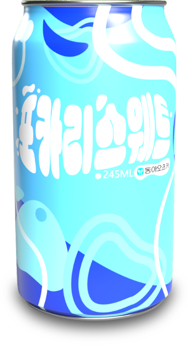
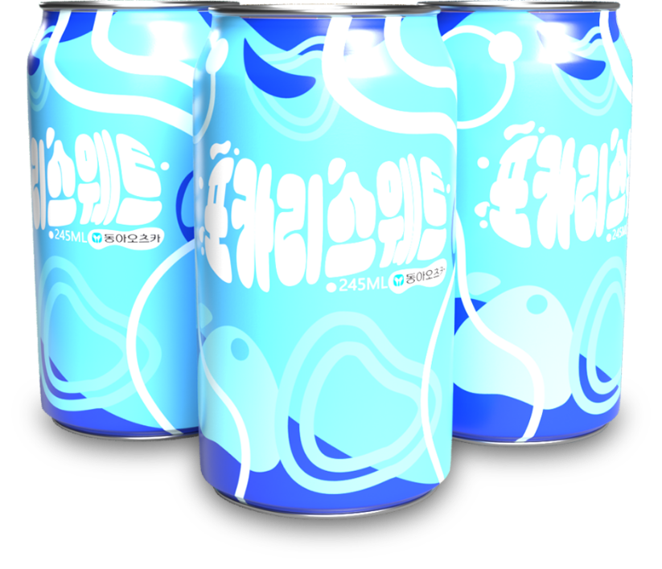

내 몸에 가까운 물 포카리스웨트
포카리스웨트는 체액과 가까운 농도로 조성되어 있는 전해질(나트륨, 칼륨, 칼슘, 마그네슘 등)을 함유하고 있어
체내로 신속하게 수분과 이온을 보충해주고 우리 몸의 밸런스를 유지해줍니다.
물과 이온음료의 차이점
땀을 흘렸을 때 수분보충을 위해 물만 마실 경우,
우리의 몸은 자발적 탈수 현상을 겪게 되며
이 과정에서 갈증이 해소되지 않아 탈수로
부터 회복되지 않습니다.
